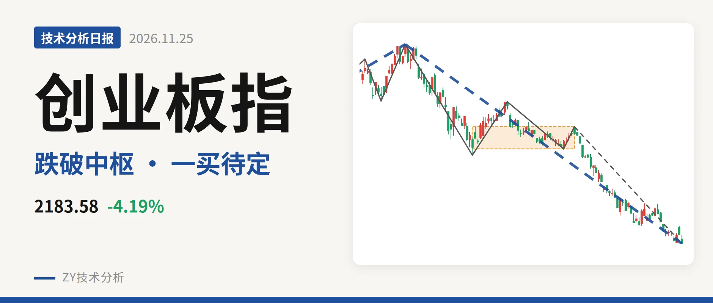
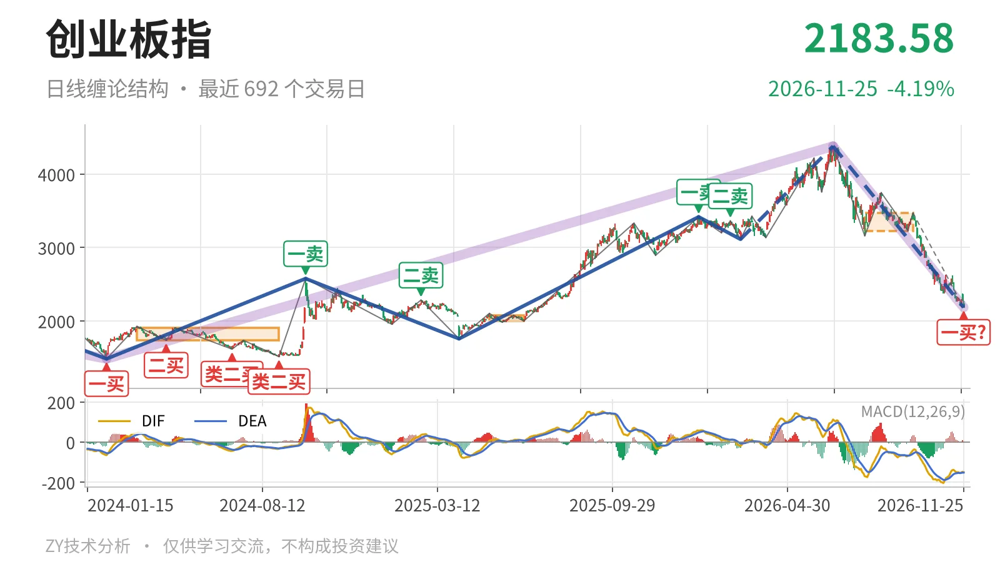
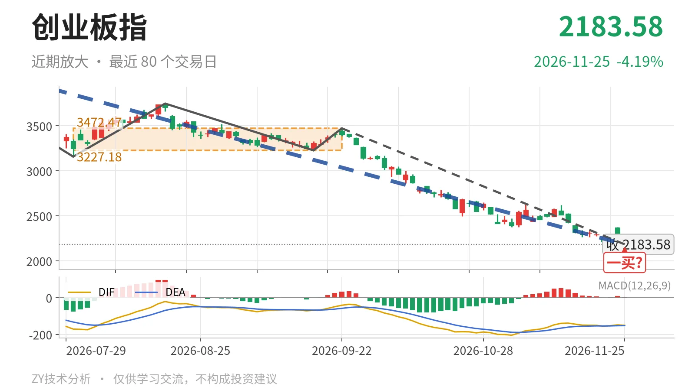

创业板指｜跌破日线中枢 一买暂定

最近日线中枢 3227.18—3472.47点，收盘位于中枢之下
一句话：日线下跌段仍在延续，11月25日一买暂定，反抽观察3227点。
📉 走势结构：日线下跌段延续，更大级别上涨未完
当前处于6月25日以来的日线下跌段，该线段还在延续。2024年2月5日至2026年6月25日的上涨段由1482.99点运行至4380.41点，涨幅约195.4%，在更大级别上尚未结束；6月25日至11月25日的下跌段跌幅约50.2%，同样没有结束。日线线段上，3月9日至6月25日的上涨段和6月25日以来的下跌段各含5笔，后者主导当前结构。最新DIF -150.8仍在零轴之下，空头状态没有改变。所以当前不是中枢震荡，而是下跌段延续。

🧭 中枢与位置：跌破最近中枢，回到旧线段中枢
最新收盘2183.58点，低于7月30日至9月22日日线笔中枢下沿3227.18点约32.3%。该中枢上沿3472.47点，尚未完成。价格同时回到2022年4月27日至2023年8月4日的线段中枢2122.32—2282.65点内部，略低于中轴2202.48点。最近笔中枢由2025年5月14日至2025年6月23日的1996.96—2076.91点上移至3227.18—3472.47点。当前又跌回更早线段中枢内，上移结构被打断。
🎯 买卖点：11月25日一买暂定，前高卖点级别变小
1月13日出现一卖3416.84点，2月25日二卖3363.18点，卖点一个比一个低。之后3月至6月创出4380点新高，因此这两个卖点只对应日线笔以下级别。11月25日出现一买2183.58点，所在下跌笔为9月22日至11月25日，该笔没有结束。所以这是暂定的一买，会随这一笔延续而变化。

⚡ 背驰：当前下跌笔力度放大，未见衰竭
9月22日至11月25日的下跌笔由3472点跌至2183.58点，跌约37.1%，仍在进行。绿柱面积1110，DIF低点-204.5。与8月18日至9月16日的下跌笔相比，后者由3747.53点跌至3227点，绿柱面积147，DIF低点-76.6。当前面积明显放大，DIF低点更低。价格创2183.58点新低，但MACD没有出现“新低不新弱”，反而力度更强。日线笔级别看不到背驰。由于这一笔还没有结束，最终背驰与否要等该笔完成后才能定。
🛡 关键位置观察：反抽不回3227点将构成三卖
当前价格在最近日线笔中枢下沿下方。反抽若回不到3227点附近，结构上构成对7月30日至9月22日中枢的三卖。下方旧线段中枢2122—2283点，若重新站上2283点一线，下跌更可能只是中枢扩展；若跌破2122点附近，旧线段中枢下沿失去承接。结构偏弱，弱在价格跌破最近中枢下沿，且当前下跌笔力度未见衰竭。
⚠️ 本文为基于公开行情数据的缠论技术结构记录，由程序自动计算并生成，仅供学习交流，不构成任何投资建议。市场有风险，投资需谨慎。